Agile Tour Nantes 2026 · Steeve Evers
Et maintenant ?
Ce que l'histoire de l'agilité nous dit de son avenir
Bonjour à toutes et à tous. Je m'appelle Steeve Evers. Depuis plusieurs mois, je mène des recherches sur l'histoire de l'agilité, et c'est la première fois que je les partage en public.
Le titre de cette conférence est une question : « Et maintenant ? ». Pour y répondre, je vous propose un détour par le passé. Et pour raconter ce passé, je vais utiliser une image : celle d'une traversée. Vous allez voir des navires, des équipages, des ports. Ce ne sont que des images. Les faits, eux, sont sourcés, et je vous dirai à chaque fois ce qui relève du fait et ce qui relève de ma conviction.
D'où je parle
Steeve Evers
Laboratoire d'Expérimentations Digitales · BPCE SI
J'accompagne les initiatives innovantes de nos collaborateurs et partenaires.
BPCE SI
« Accélérer le business, en construisant ensemble des solutions technologiques performantes dans une entreprise IT de référence. »
Une entreprise dédiée à l'innovation, au développement et à la maintenance des systèmes d'information des établissements bancaires et des métiers du Groupe BPCE.
2 500 collaborateurs · 18 villes en France
Groupe BPCE
« Coopératif, banquier et assureur, notre modèle est au service de nos clients et de l'économie. »
2e acteur bancaire en France
Un mot sur d'où je parle.
Je travaille au sein du Laboratoire d'Expérimentations Digitales de BPCE SI. Mon rôle : accompagner les initiatives innovantes de nos collaborateurs et de nos partenaires.
BPCE SI est une entreprise dédiée à l'innovation, au développement et à la maintenance des systèmes d'information des établissements bancaires et des métiers du Groupe BPCE. Notre mission : accélérer le business, en construisant ensemble des solutions technologiques performantes dans une entreprise IT de référence. Nous sommes environ 2 500, dans 18 villes en France.
Le Groupe BPCE, deuxième acteur bancaire en France, se définit ainsi : coopératif, banquier et assureur, son modèle est au service de ses clients et de l'économie.
Ce que je vais vous raconter n'engage que moi. Mais mon quotidien, accompagner des équipes qui expérimentent avec de nouvelles technologies, est exactement au cœur de cette histoire.
Ce qu'on raconte
« L'agilité est née en 2001. »
On raconte souvent que l'agilité est née en février 2001, dans une station de ski de l'Utah, quand dix-sept personnes ont signé un manifeste.
C'est vrai, et c'est trompeur. Car en remontant les sources, on trouve des dates bien plus anciennes : 1924, 1970, 1986. Les idées étaient là depuis longtemps.
Alors pourquoi l'agilité apparaît-elle dans les années 1990, et pas avant ? Ma réponse, c'est qu'elle n'est pas née d'abord d'une idée de management. Elle est née d'un changement dans la façon de programmer. C'est ma conviction, et je vais essayer de vous la rendre plausible avec des faits. Vous restez libres de ne pas la partager.
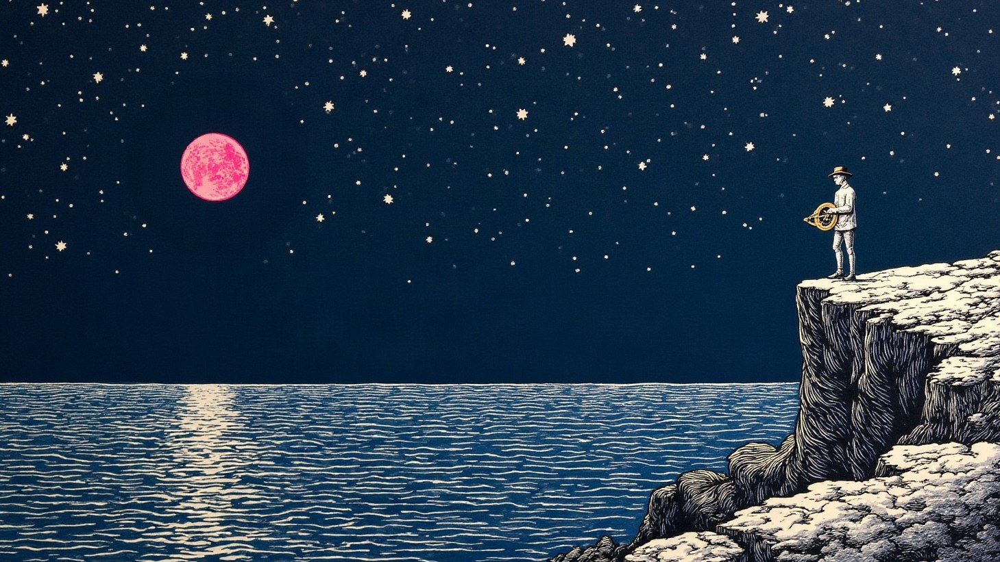
Chapitre 1 · 1924 — 1986
Les étoiles étaient déjà là
Premier chapitre : les étoiles.
Bien avant de savoir traverser un océan, les marins avaient les étoiles. Les repères existaient ; il manquait le navire capable de s'en servir.
C'est exactement la situation du logiciel avant les années 1990. Les idées que nous appelons aujourd'hui agiles sont déjà formulées, parfois depuis des décennies, par des gens que l'histoire a presque effacés. Je vais vous en présenter quelques-uns.
1924 — 1986
Les géants oubliés
Follett · Royce · Weinberg · Gilb · Deming
Cinq phares, cinq noms.
1924 : Mary Parker Follett oppose le pouvoir « sur » les autres au pouvoir « avec » les autres.
1970 : Winston Royce publie l'article qu'on présente comme l'acte de naissance du cycle en cascade. Il y écrit pourtant que ce modèle purement séquentiel est, je cite, « risqué et invite à l'échec ». Le mot « waterfall » n'apparaît même pas dans son texte.
1971 : Gerald Weinberg défend la programmation sans ego : le logiciel est une activité humaine.
1976 : Tom Gilb défend la livraison évolutive, par petits pas. D'après Larman et Basili, c'est le plus ancien livre à le faire clairement.
1986 : Deming publie « Out of the Crisis » et son cycle d'amélioration continue, qu'il appelle PDSA plutôt que PDCA.
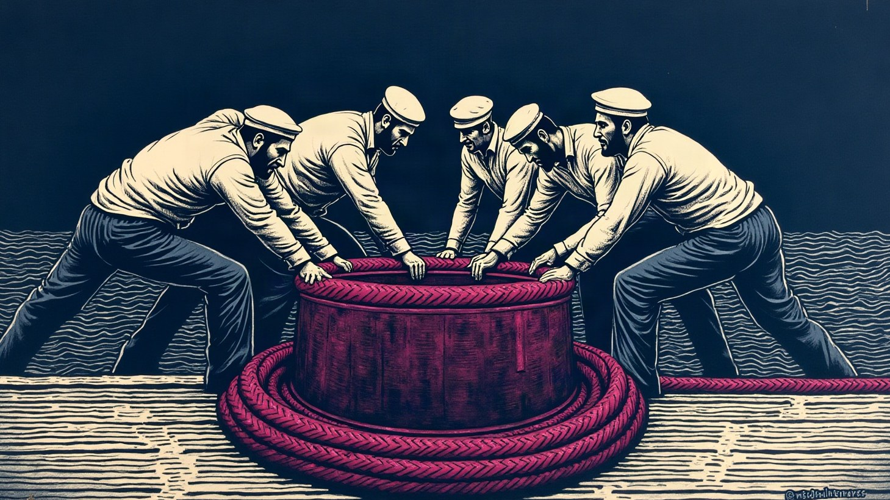
1986 · Takeuchi & Nonaka
La mêlée
Une image venue de l'industrie, pas du logiciel
1986. Deux chercheurs japonais, Hirotaka Takeuchi et Ikujiro Nonaka, publient dans la Harvard Business Review un article intitulé « The New New Product Development Game ».
Ils étudient la conception de produits chez Fuji-Xerox, Canon, Honda, NEC et quelques autres. Des photocopieurs, des appareils photo, une voiture. Pas une ligne de logiciel.
Ils opposent deux façons de travailler. La course de relais, où chaque spécialiste passe le témoin au suivant. Et le rugby, où l'équipe avance ensemble en se passant le ballon. Un intertitre de l'article parle de faire avancer la mêlée : en anglais, « the scrum ».
Neuf ans plus tard, quand Ken Schwaber présente sa méthode, il cite explicitement cet article pour expliquer le nom qu'il lui donne.
À la même époque, une autre source vient aussi de l'industrie japonaise : le livre de Taiichi Ohno sur le système de production Toyota, paru au Japon en 1978 et traduit en anglais en 1988. Le Lean et le Kanban viennent de là.
Soixante ans d'idées
Qu'est-ce qui manquait ?
Résumons. En 1986, nous avons le pouvoir partagé, la critique du séquentiel, l'attention aux personnes, la livraison par petits pas, l'amélioration continue, l'équipe qui avance ensemble.
Toutes les étoiles sont en place. Et pourtant, dans le logiciel, rien ne prend. Pendant toutes ces années, l'industrie continue de spécifier d'abord, de coder ensuite, et de découvrir les problèmes à la fin.
Pourquoi ? Qu'est-ce qui manquait ?
Regardez cette coque sur sa cale. Il manquait le navire.
Chapitre 2 · 1989 — 2001
Un nouveau navire : l'objet
Deuxième chapitre : le nouveau navire.
Ce navire, pour moi, c'est la programmation orientée objet, et en particulier la communauté qui se forme autour du langage Smalltalk à la fin des années 1980.
Je vais vous montrer que les pratiques que nous appelons agiles sortent, pour la plupart, de ce milieu-là. Et je vous proposerai une explication : l'objet a changé ce qu'on pouvait dire à la machine, et donc la façon de travailler ensemble.
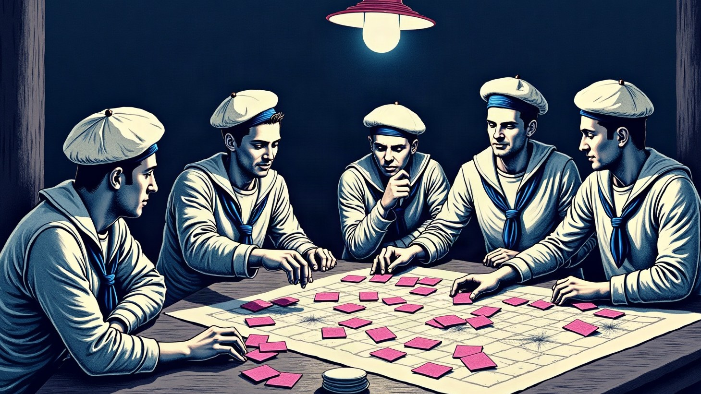
1989 · Beck & Cunningham
Des cartes sur une table
Octobre 1989, La Nouvelle-Orléans. À la conférence OOPSLA, consacrée à la programmation objet, Kent Beck et Ward Cunningham présentent un article au titre modeste : « Un laboratoire pour enseigner la pensée orientée objet ». Ils se sont connus chez Tektronix, où ils écrivaient du Smalltalk ensemble.
Leur outil : des fiches bristol. Sur chacune, le nom d'une classe, ses responsabilités, ses collaborations. Ce sont les cartes CRC.
Ce qui m'intéresse, ce n'est pas la fiche. C'est la scène. Des gens autour d'une table, qui déplacent des cartes, qui jouent le rôle des objets, et qui conçoivent un logiciel en se parlant, avec les mots du métier.
Ce n'est pas encore une méthode. C'est une nouvelle façon de converser. Et elle naît d'un besoin technique : apprendre à penser en objets.
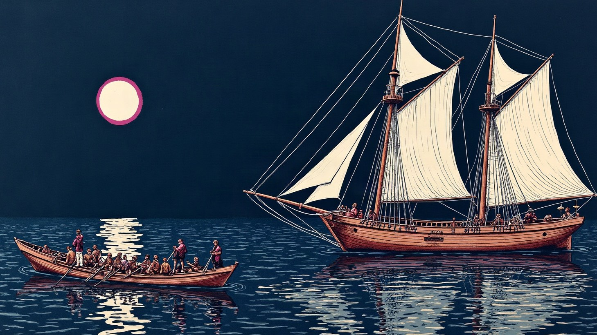
Ce que l'objet change
Le code parle enfin métier
Un besoin et une opportunité : se parler
Voici, à mon sens, le cœur de l'histoire. C'est une lecture, mais elle s'appuie sur ce que les acteurs ont écrit eux-mêmes.
Avant l'objet, l'humain parle la langue de la machine. Changer coûte cher, donc on spécifie tout à l'avance. C'est la galère : tout le monde rame à la cadence.
Avec l'objet, le code peut porter les mots du métier, et il devient plus facile à modifier.
Ward Cunningham invente en 1992 la métaphore de la dette. Presque personne ne cite la suite : « les objets rendent le coût de cette transaction tolérable ». Kent Beck, en 1999, voit dans les objets une technologie clé pour aplatir le coût du changement, tout en précisant qu'ils ne sont ni indispensables ni suffisants.
Si changer coûte moins cher, on peut ajuster en chemin. Mais ajuster suppose de se parler, souvent. L'objet crée à la fois l'opportunité et le besoin. C'est le voilier : on règle la voilure en route, à condition que l'équipage se parle.
1989 — 1995
OOPSLA, le port d'attache
Si vous cherchez le port d'attache de cette histoire, c'est OOPSLA et la communauté qui s'y retrouve.
1989 : les cartes CRC, je viens d'en parler.
1992 : la dette, dans un rapport d'expérience de Ward Cunningham sur un logiciel financier écrit en Smalltalk.
1994 : le livre « Design Patterns » est mis en vente à OOPSLA. Il s'en vend 750 exemplaires pendant la conférence.
1995 : Ken Schwaber présente Scrum dans un atelier d'OOPSLA co-organisé par Jeff Sutherland. Son article décrit Scrum comme une amélioration du cycle de développement orienté objet, itératif et incrémental. Et Sutherland raconte que sa première équipe Scrum, en 1993, construisait un outil de conception objet, en Smalltalk.
Autour de la conférence, dans la même communauté : la thèse de William Opdyke sur le refactoring, en 1992, et l'article de Kent Beck sur les tests en Smalltalk, en 1994, qui donnera JUnit.
Je ne dis pas que tout vient d'OOPSLA. Je dis que ce milieu-là a été l'incubateur.
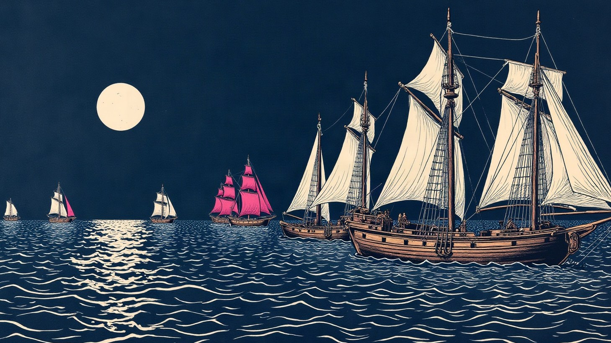
1995 — 1999
La décennie magique
La seconde moitié des années 1990 est une décennie magique en accéléré.
Le 25 mars 1995, Ward Cunningham met en ligne le premier wiki. Il le crée pour que la communauté des patterns puisse écrire ensemble. C'est là que ces idées vont se discuter, à ciel ouvert.
En 1996, Kent Beck reprend un projet de paie chez Chrysler, le projet C3, écrit en Smalltalk. C'est le laboratoire d'Extreme Programming. Le projet sera arrêté début 2000 ; la méthode, elle, aura fait le tour du monde.
En 1997, dans un avion entre Zurich et Atlanta, en route pour OOPSLA, Kent Beck et Erich Gamma écrivent JUnit.
En 1999 paraissent « Extreme Programming Explained » de Kent Beck et « Refactoring » de Martin Fowler.
Regardez ce que ces années ont en commun : des praticiens, qui publient, qui se répondent, qui expérimentent. Une flottille, pas encore une flotte.
1999 · Extreme Programming
Tenir la barre à deux
Extreme Programming, c'est douze pratiques. Le jeu du planning, les petites livraisons, la métaphore, la conception simple, les tests, le refactoring, la programmation en binôme, la propriété collective du code, l'intégration continue, la semaine de quarante heures, le client sur site, les standards de codage.
Parmi les méthodes qui se retrouveront autour du Manifeste, XP est celle qui prescrit le plus explicitement un ensemble complet de pratiques d'ingénierie. Scrum, lui, les laisse volontairement hors de son périmètre.
Et XP définit un rôle qui nous intéresse : le coach. Dans le livre de 1999, c'est un membre de l'équipe, responsable du processus dans son ensemble, qui remarque quand l'équipe s'en écarte. Kent Beck précise qu'on mesure un bon coach au faible nombre de décisions techniques qu'il prend lui-même.
Retenez cette image : deux marins à la barre. Nous y reviendrons.
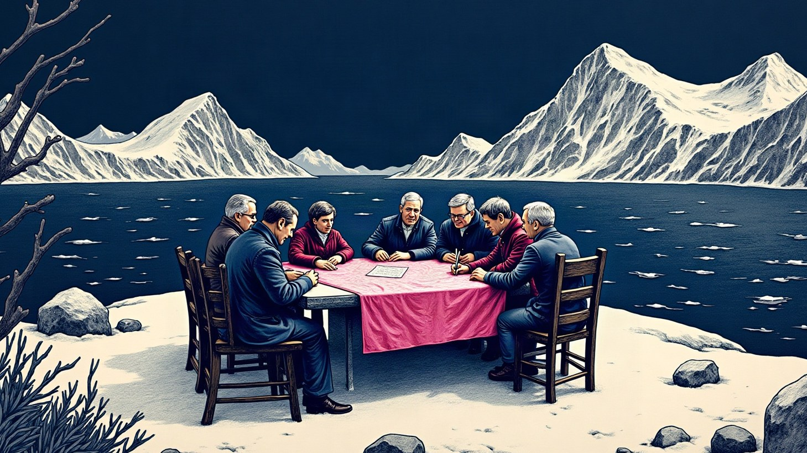
Snowbird · février 2001
Le Manifeste ne crée rien. Il cristallise.
Du 11 au 13 février 2001, dix-sept personnes se réunissent au Lodge de Snowbird, dans les montagnes de l'Utah. Elles représentent XP, Scrum, DSDM, Crystal et quelques autres approches.
Ce groupe ne décide pas de créer un mouvement. Il constate qu'un mouvement existe, et il lui donne un nom et quatre valeurs. Le Manifeste ne crée rien : il cristallise.
Un mot sur les signataires, parce qu'il touche à ma thèse. Selon mon décompte, au moins neuf des dix-sept viennent du monde de l'objet. Mais pas tous : DSDM vient du développement rapide d'applications, pas de l'objet. Il serait malhonnête de vous dire que l'agilité a une seule origine.
Je vous lis un des douze principes, dans sa traduction française officielle : « Une attention continue à l'excellence technique et à une bonne conception renforce l'Agilité. » Gardez-le en tête pour la suite.
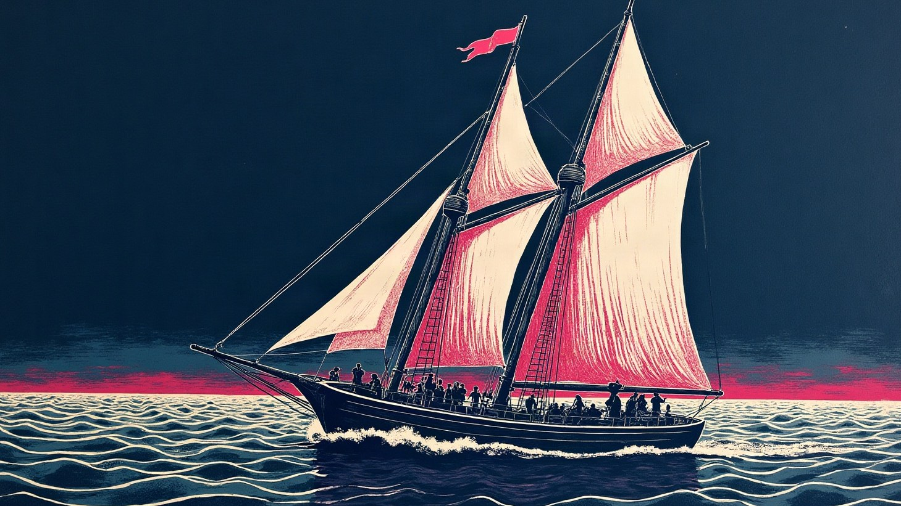
Ma conviction
L'agilité est née de ce navire
Voilà pour les faits. Voici ma conviction.
Les idées existaient depuis longtemps. Le développement par incréments aussi : on le pratiquait dès les années 1950. Ce que l'objet a apporté, ce sont des conditions : un code qui porte le sens, un changement moins coûteux, et donc à la fois le besoin et la possibilité de se parler en continu.
Martin Fowler l'écrit à sa manière : les racines de XP sont dans la communauté Smalltalk, et l'essentiel de ces travaux vient de la communauté objet.
Je formule donc ma thèse ainsi : l'agilité est l'art de l'équipage, et cet art est né avec ce navire. Quand une technologie change ce qu'on peut exprimer à la machine, elle change la façon dont les humains travaillent ensemble.
Si cette thèse est juste, elle a une conséquence pour aujourd'hui. Mais avant, il faut raconter ce que l'agilité est devenue.
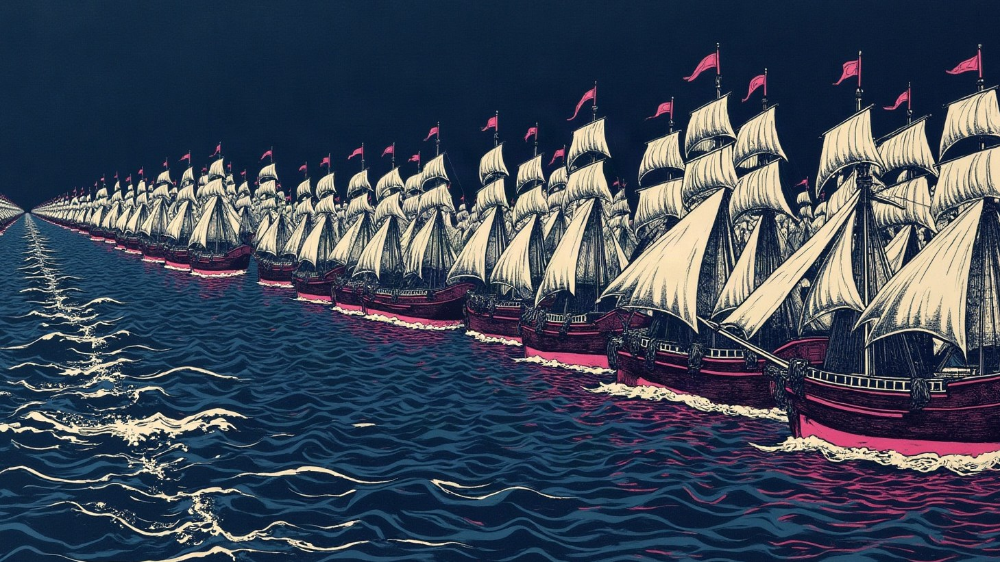
Chapitre 3 · 2001 — 2024
L'armada
Troisième chapitre : l'armada.
Après 2001, l'agilité se diffuse à une vitesse que ses auteurs n'avaient pas prévue. Les navires se multiplient, les pavillons aussi.
Je vais vous montrer que, dans cette diffusion, quelque chose s'est perdu en route. Là encore, je m'appuie sur des chiffres et sur ce qu'en ont dit les signataires eux-mêmes.
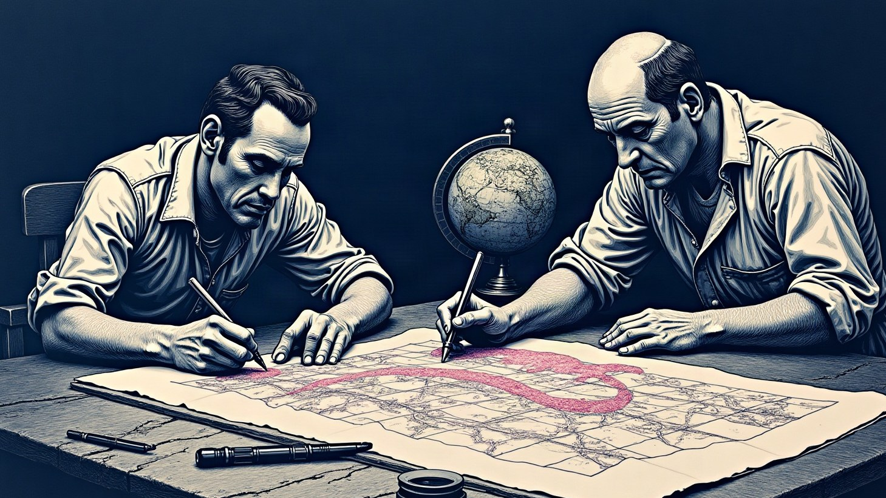
2002 — 2006
On cartographie encore
D'abord, il faut le dire : après le Manifeste, l'invention continue. On cartographie encore.
Novembre 2002 : Kent Beck publie « Test-Driven Development: By Example ».
2003 : Mary et Tom Poppendieck publient « Lean Software Development », et Eric Evans « Domain-Driven Design ».
2004 : Michael Feathers, « Working Effectively with Legacy Code ».
2005 : Alistair Cockburn publie l'architecture hexagonale, une idée qu'il dessinait déjà en 1994 dans un cours de programmation objet.
Mars 2006 : Dan North présente le Behaviour-Driven Development.
Regardez la nature de ces travaux. Ce sont presque tous des travaux techniques : comment écrire, tester, structurer, reprendre du code. La communauté d'origine continue de creuser le même sillon.
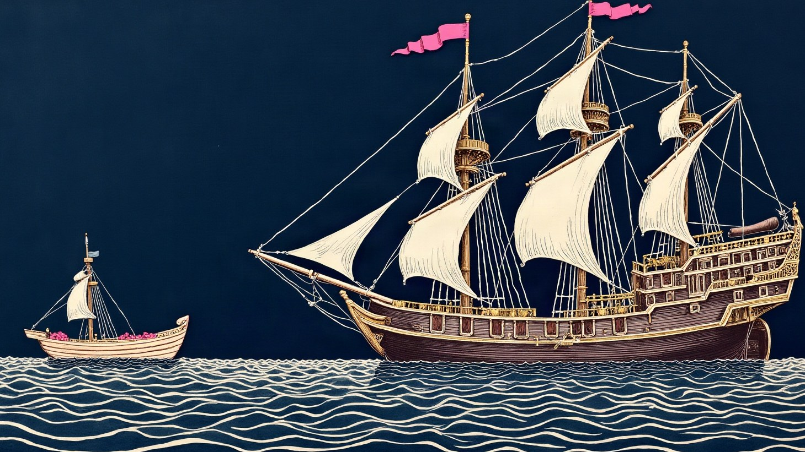
2006 — 2010
Scrum s'impose, XP s'efface
Pendant ce temps, dans les entreprises, une méthode prend le dessus.
Je m'appuie ici sur l'enquête annuelle « State of Agile ». Une précaution : ses répondants sont volontaires et recrutés par un éditeur d'outils. Ce n'est pas un échantillon représentatif, mais c'est la série la plus longue dont on dispose.
En 2006, première édition : 40 % des répondants disent suivre Scrum, 23 % XP. Scrum est déjà devant.
En 2010 : Scrum est à 58 %, XP à 4 %.
En quatre ans, XP a presque disparu en tant que méthode revendiquée. Scrum s'explique en quelques phrases : dans son guide actuel, trois responsabilités, cinq événements, trois artefacts. Et Scrum se certifie : le premier cours de Certified ScrumMaster date de 2003.
Le grand navire d'apparat est passé devant le bateau de travail.
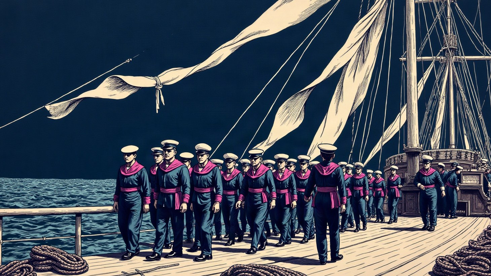
La déconnexion
La parade sur le pont
Qu'est-ce qui s'est diffusé, et qu'est-ce qui est resté à quai ?
Dans les mêmes enquêtes, en 2019, 85 % des répondants pratiquent la réunion quotidienne, 81 % la rétrospective. Le développement piloté par les tests, lui, passe de 49 % en 2008 à 30 % en 2019. La programmation en binôme reste autour de 30 %. Les tests unitaires et l'intégration continue se sont répandus ; ce sont les pratiques les plus exigeantes de XP qui sont restées minoritaires.
Martin Fowler nomme le phénomène dès 2009 : le « Scrum flasque », une équipe qui ralentit parce que sa base de code est en désordre. Il précise que les promoteurs de Scrum ont toujours dit les pratiques techniques nécessaires. Ron Jeffries parlera en 2016 de « Dark Scrum ».
La parade sur le pont : les uniformes sont impeccables, les cordages sont emmêlés.
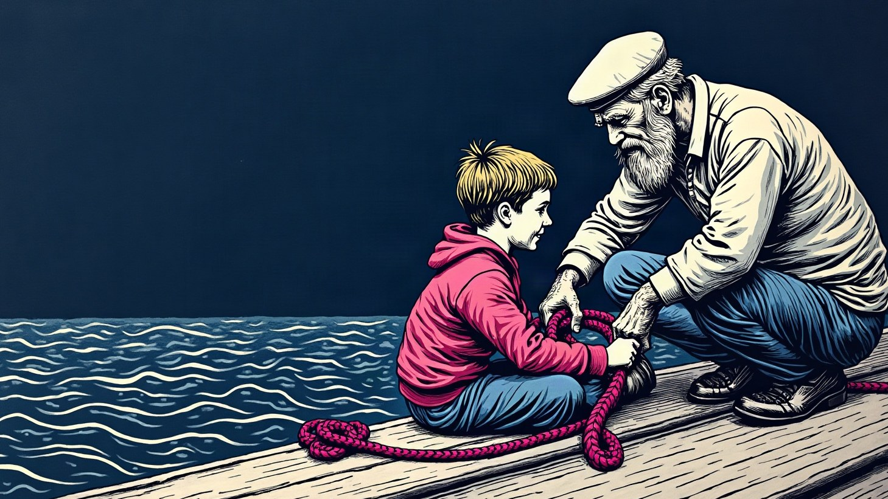
1999 → 2011
Le coach : du geste à la posture
Et le coach, dans cette histoire ?
En 1999, le coach de XP est dans l'équipe : le plus souvent un développeur expérimenté, garant du processus et de son exécution technique.
En 2009 et 2010 paraissent « Agile Coaching » de Rachel Davies et Liz Sedley, puis « Coaching Agile Teams » de Lyssa Adkins, qui cofonde l'Agile Coaching Institute avec Michael Spayd. Leur référentiel de 2011 place au centre quatre postures : enseigner, mentorer, faciliter, coacher. La maîtrise technique y devient un domaine parmi trois.
C'est une interprétation, je n'ai pas trouvé d'historien qui la formule ainsi : le coach passe du geste à la posture. Il transmettait un savoir-faire de marin ; il accompagne désormais surtout un cadre et des relations.
Ce n'est pas une critique du coaching. C'est le même mouvement que celui de la slide précédente, vu depuis un métier.
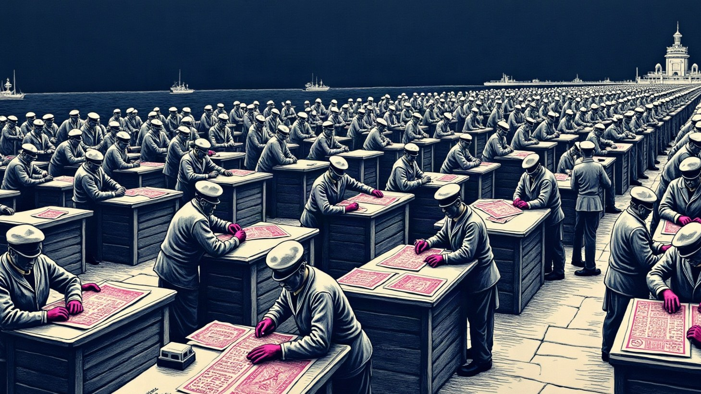
2016 · « Agile Industrial Complex »
D'une communauté à une industrie
Dernier trait de cette période : la communauté d'idées devient une industrie.
Dès 2006, Martin Fowler prévient : imposer un processus à une équipe est, écrit-il, totalement contraire aux principes de l'agilité.
Puis viennent les cadres à grande échelle : les premiers travaux de Larman et Vodde sur LeSS en 2008, SAFe en 2011 avec ses certifications. Le besoin est réel ; les réponses sont très différentes.
En 2016, Daniel Mezick théorise le « complexe agilo-industriel » : un réseau qui rend normale l'imposition de l'agilité à des équipes qui n'y ont pas consenti. En 2018, Martin Fowler reprend l'expression sur scène, en reconnaissant qu'il en fait partie, et regrette qu'on parle si peu, dans les conférences agiles, des techniques d'écriture du logiciel.
Je fais partie de cette industrie, moi aussi. Je ne montre pas ces guichets pour accuser, mais pour voir où nous en sommes au moment où arrive la suite.
Chapitre 4 · 2025 —
La machine
Quatrième chapitre : la machine.
Voici un vapeur qui sort de la brume au milieu des voiliers. Il n'a pas besoin du vent.
Je vais vous parler de ce qui se passe depuis 2025. Ici, les sources sont récentes et la prudence s'impose : nous manquons de recul, et une bonne partie de ce qui se publie vient de ceux qui vendent les outils.
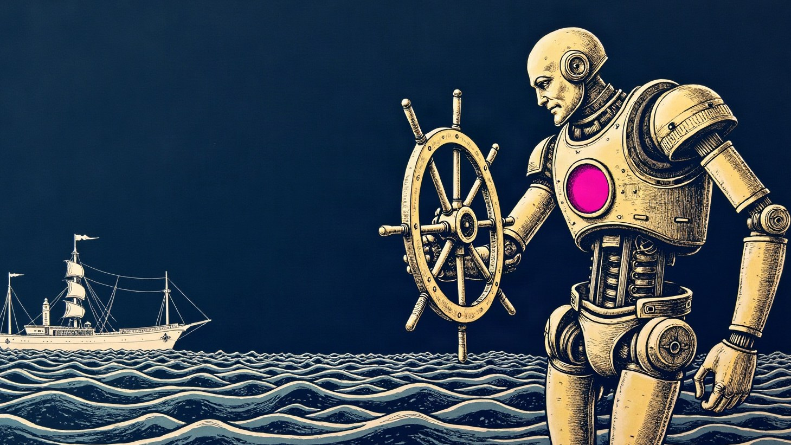
2025 — 2026 · les agents de codage
Elle comprend notre langue
Quelques dates, d'abord.
GitHub Copilot apparaît en juin 2021. À ce stade, c'est de la complétion : la machine propose la ligne suivante.
Le changement de nature date de 2025. En février, GitHub Copilot lance son mode agent et Cursor fait du sien le mode par défaut. Le même mois, Anthropic publie Claude Code en aperçu, puis en version générale en mai. Un agent ne complète plus une ligne : on lui confie une tâche, il lit le code, le modifie, lance les tests et corrige.
Début 2026, Anthropic publie un rapport de tendances. C'est un document d'éditeur, et il présente des prédictions, pas une étude. Il affirme que le métier passe de l'écriture du code à l'orchestration d'agents qui l'écrivent. Il contient aussi un chiffre qui tempère l'enthousiasme : les développeurs utilisent l'IA dans environ 60 % de leur travail, mais ne disent pouvoir déléguer entièrement que 0 à 20 % des tâches.
Ce qui change, pour mon propos, tient en une phrase : la machine comprend maintenant notre langue.
Procédural · Objet · IA
Trois façons de parler à la machine
Je vous propose de mettre côte à côte trois navires, trois façons de parler à la machine.
La galère, c'est le procédural. L'humain parle la langue de la machine. On spécifie tout avant, parce que changer coûte cher.
Le voilier, c'est l'objet. Le code porte le sens du métier et devient malléable. Les humains doivent se parler en continu. Cela donne l'agilité.
Le vapeur, c'est l'IA. L'humain exprime son intention dans sa propre langue, et la machine produit le code. Écrire le code ne coûte presque plus rien. Ce qui devient rare, c'est de savoir dire clairement ce qu'on veut, et de vérifier ce qu'on obtient.
Est-ce la plus grande rupture depuis l'objet ? C'est mon opinion, et je n'ai trouvé personne d'autorité pour le dire en ces termes. Le rapport d'Anthropic parle du plus grand changement depuis l'interface graphique. Martin Fowler compare l'ampleur du changement au passage de l'assembleur aux premiers langages de haut niveau. Chacun choisit son repère. Le mien, c'est l'objet, parce que c'est lui qui a fait naître nos pratiques.
2025 ≈ 1993
Dans la brume
Où sommes-nous dans cette histoire ? Ma réponse est une analogie, pas un fait : nous sommes en 1993.
En 1993, l'objet est là depuis quelques années. Une équipe, chez Easel, essaie pour la première fois ce qui deviendra Scrum. XP n'existe pas encore. Le Manifeste est à huit ans de distance. Chacun improvise.
Aujourd'hui, les agents sont là depuis un an ou deux. Il n'y a pas de méthode partagée. On ne sait pas bien qui fait quoi entre l'humain et l'agent.
Et les premières mesures invitent à la prudence. Le rapport DORA de 2025 conclut que l'IA agit comme un amplificateur : elle renforce les forces d'une organisation, et ses faiblesses. Il observe que l'adoption de l'IA va de pair avec un débit plus élevé, mais aussi avec une stabilité des livraisons plus faible.
Nous sommes dans la brume. Il y a un phare, au loin, mais personne ne sait encore le nommer.
Chapitre 5 · 2026 →
Et maintenant ?
Dernier chapitre : le large.
Et maintenant ?
Si ma thèse est juste, si l'agilité est née de ce que l'objet permettait de dire à la machine, alors un nouveau changement dans ce dialogue doit logiquement réinterroger nos pratiques. Pas toutes de la même façon.
Ce qui suit est ma lecture. Je vous la donne pour qu'on en discute, pas pour trancher.
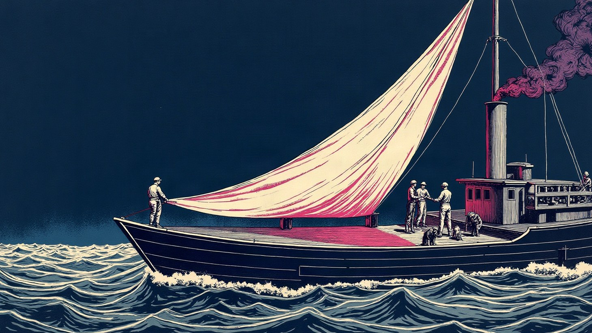
Les conditions de l'agilité
Le vent a tourné
L'agilité reposait sur des conditions. Plusieurs sont en train de bouger.
Première condition : le code est écrit par des humains, et c'est long. C'est ce qui justifiait d'estimer, de prioriser, de mesurer une vélocité. Un agent produit ce code en quelques minutes.
Deuxième condition : une conversation vaut mieux qu'un document. C'est un principe du Manifeste, qui privilégie le dialogue en face à face. Mais l'agent n'était pas dans la salle. Il ne connaît que ce qui est écrit.
Troisième condition : le retour d'information arrive au rythme de l'itération. Il peut désormais arriver dans l'heure.
Quatrième condition : l'équipe coordonne des humains qui codent. Qui coordonne quoi, quand une partie du travail est faite par des agents ?
Le vent a tourné. On affale une partie de la voilure. La question est de savoir ce qu'on garde à bord.
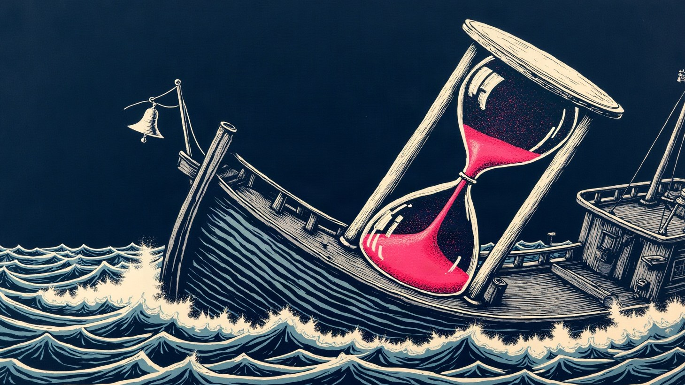
Ma lecture
Ce qui vacille
Ce qui vacille, d'abord. Je parle en mon nom.
Le sablier : les points, la vélocité, le sprint pensé comme une unité de production. Si produire n'est plus le goulot, ces instruments mesurent autre chose que ce qui compte.
La préférence systématique pour l'oral. Je ne dis pas qu'il faut revenir aux cahiers des charges. Mais un contexte écrit, versionné, lisible par une machine, redevient utile.
Et certains rituels, conçus pour synchroniser des personnes qui écrivent du code à la main.
Une nuance importante, que formulent les meilleures voix de notre communauté. Le Technology Radar de Thoughtworks et Birgitta Böckeler, sur le site de Martin Fowler, mettent en garde contre le retour de la grosse spécification en amont : les petits pas restent le meilleur moyen de garder la maîtrise.
Ce qui vacille, ce n'est donc pas l'itération. C'est une partie de l'outillage que nous avions construit autour.
Ma lecture
Ce qui tient
Et ce qui tient. Regardez cette table : une boussole, une longue-vue, un journal de bord.
Les tests. Quand du code est produit en masse, c'est le test qui dit si l'on peut s'y fier.
Le refactoring et l'architecture. Un agent peut produire beaucoup de code qui fonctionne et qui ne tient pas ensemble.
L'intégration continue et les petits incréments. Le rapport DORA de 2025 cite le travail en petits lots parmi les capacités qui conditionnent les bénéfices de l'IA.
Le retour des utilisateurs. Savoir quoi construire redevient la vraie difficulté.
Et l'empirisme : regarder ce qui se passe, et ajuster.
Je vous laisse avec une observation, que je vous invite à vérifier par vous-mêmes. Cette liste ressemble beaucoup à ce que la diffusion avait laissé à quai. Le principe du Manifeste sur l'excellence technique, celui que je vous ai lu tout à l'heure, n'a peut-être jamais été aussi actuel.
Ce que l'histoire enseigne
Inviter, ne pas imposer
1
Une rupture technique appelle une façon de travailler
2
Garder l'excellence technique au centre
4
Rester une communauté d'idées
5
Avancer par essais, à petite échelle
Que nous enseigne l'histoire pour la suite ? J'en tire cinq leçons. Ce sont des leçons, pas des lois.
Un : la réponse à une rupture technique n'a jamais été seulement technique. Elle a été une façon de travailler.
Deux : l'excellence technique doit rester au centre. C'est ce que nous avons perdu une fois.
Trois : inviter, ne pas imposer. C'est l'avertissement de Martin Fowler en 2006, et celui de Daniel Mezick dix ans plus tard.
Quatre : rester une communauté d'idées. Le wiki de 1995 était ouvert. Ce qui s'est construit là s'est construit en public.
Cinq : avancer par essais, à petite échelle, en regardant les résultats.
Si je ne devais en garder qu'une, ce serait celle qui est en titre.
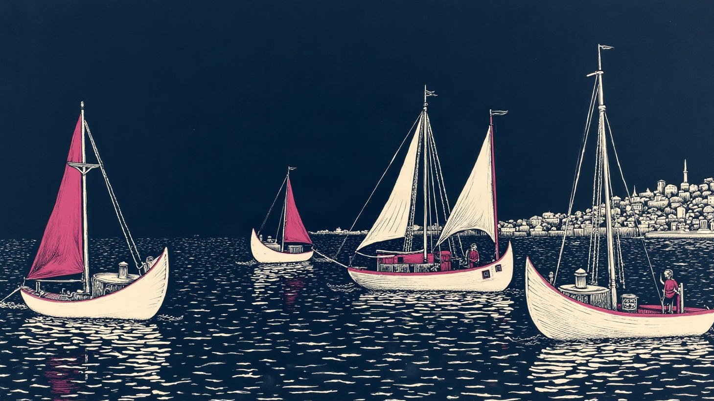
Comme en 1993
D'autres prennent déjà la mer
Des réponses commencent à prendre la mer. Comme en 1993, elles partent dans des directions différentes.
Une famille d'approches se réclame du développement piloté par les spécifications. En 2025 sont apparus, entre autres, BMAD en avril, Kiro chez Amazon en juillet, OpenSpec en août, et Spec Kit chez GitHub en septembre. En avril 2026, le Technology Radar de Thoughtworks classe Spec Kit et OpenSpec dans ce qu'il appelle sa catégorie « à évaluer », et note que deux camps se dessinent : ceux qui font confiance aux agents avec peu de structure, et ceux qui veulent des processus et des spécifications détaillés.
J'ai moi-même proposé une contribution, AIAD, un cadre ouvert et open source. Vous le trouverez sur aiad.ovh. Je le cite pour être transparent sur d'où je parle, pas pour vous le vendre.
Aucune de ces tentatives n'est la réponse. XP n'était pas non plus la réponse en 1996. C'étaient des expériences, menées par des praticiens, et publiées.
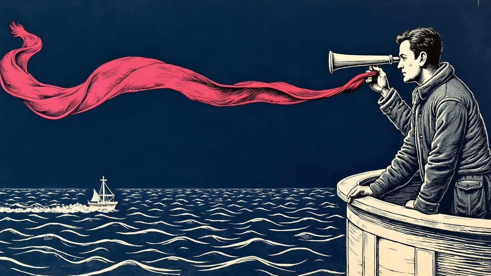
Les questions que je vous laisse
Que gardez-vous à bord ?
Que garder de l'agilité quand écrire le code n'est plus le goulot ?
Qu'est-ce qu'une équipe, quand une partie de ses membres sont des agents ?
Que coache un coach agile, demain ?
Comment rester une communauté d'idées avant de devenir une industrie ?
Je n'ai pas de conclusion à vous imposer. J'ai des questions à vous laisser.
Que gardez-vous de l'agilité quand écrire le code n'est plus le goulot ?
Qu'est-ce qu'une équipe, quand une partie de ses membres sont des agents ?
Que coache un coach agile, demain ? Des postures, ou de nouveau un geste : celui de formuler une intention et de vérifier un résultat ?
Et comment faire, cette fois-ci, pour rester une communauté d'idées avant de devenir une industrie ?
Prenez-en une. Emportez-la dans votre équipe.
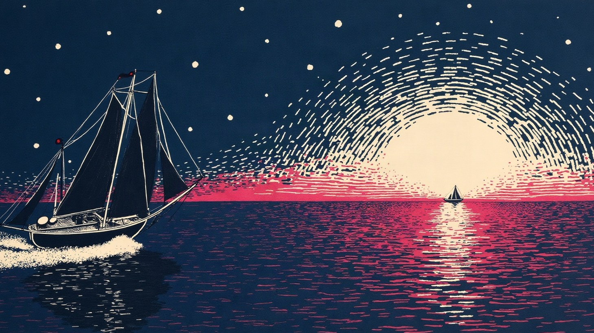
Ma conviction
Tout ne sera pas emporté
Mais tout mérite d'être réexaminé. Merci.
Je termine par ma conviction, en une phrase.
L'objet a fait naître l'agilité en changeant ce que nous pouvions dire à la machine. L'IA le change à nouveau. Tout ne sera pas emporté. Mais tout mérite d'être réexaminé, et ce qui tiendra, je crois, c'est ce que nous avions de plus exigeant.
On attribue à Mark Twain la phrase : « l'histoire ne se répète pas, mais elle rime ». Je l'ai vérifiée, comme le reste. Rien n'indique qu'il l'ait dite ; la forme la plus ancienne connue est du psychanalyste Theodor Reik, en 1965. La formule reste juste. Et c'est une bonne façon de finir : même nos citations préférées méritent qu'on retourne aux sources.
Et je vous ai préparé deux cadeaux pour la route. Merci.
Pour la route
Deux cadeaux à emporter
Deck Agile
Apprendre l'histoire de l'agilité en jouant
deck-agile.vercel.app
L'histoire de l'agilité
Le récit complet et sourcé, des précurseurs à l'IA
github.com/everssteeve/
Avant de vous laisser, deux cadeaux pour la route.
Le premier : Deck Agile, une application gamifiée pour apprendre l'histoire de l'agilité en s'amusant.
Le second : l'histoire de l'agilité, racontée en détail, des précurseurs jusqu'aux agents, avec toutes ses sources.
Prenez les QR codes en photo.